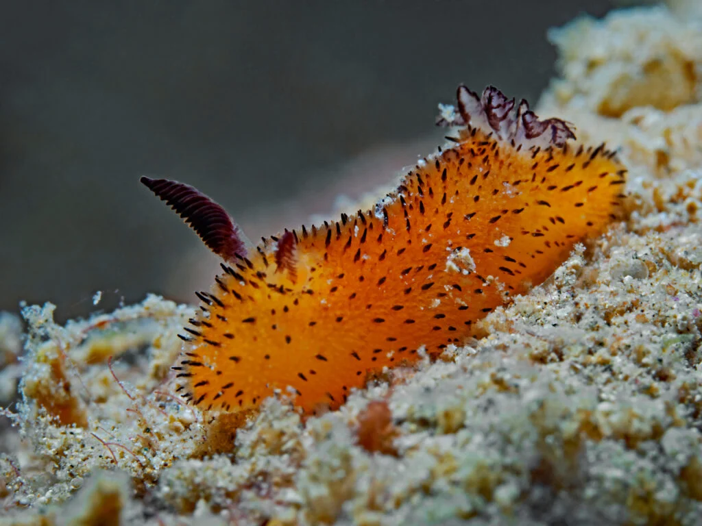
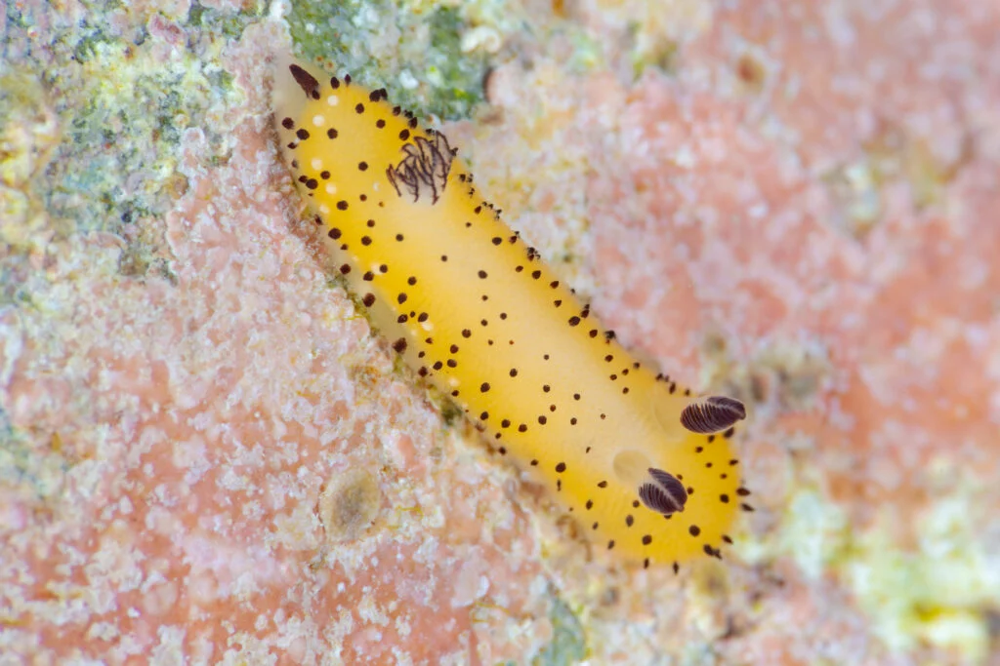
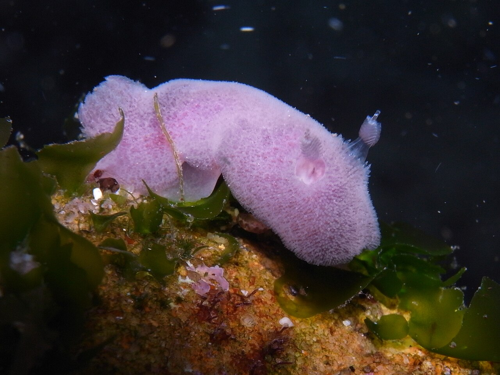

1 / 4

Sea Bunny!! (White)
2 / 4

Sea Bunny!! (Orange)
3 / 4

Sea Bunny!! (Yellow)
4 / 4

Sea Bunny!! (Purple)
Reasons why Sea bunnies are my one of my favorite kind of animals:To begin, they are cute, I know as a male I shouldn't be finding things cute but these little animals are so cute and small.
They have the ears of little bunnies which is why they are called sea bunnies (I love Animals).
Fun Fact: They are actually a Sea Slug Species (Nudibranches) and eat toxic sea sponges, using the toxins they ate as their own defense.